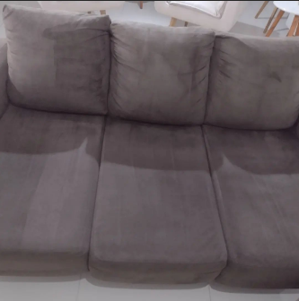
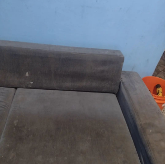
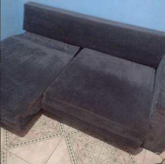
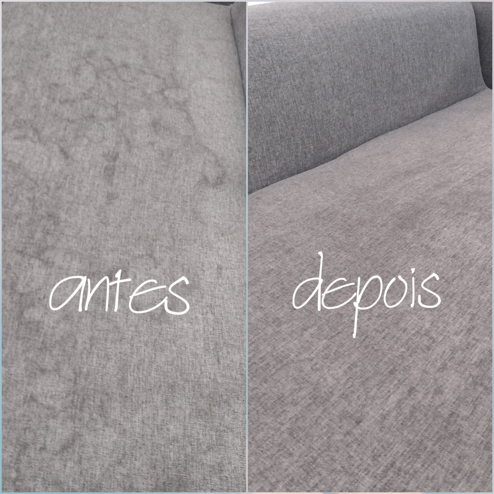
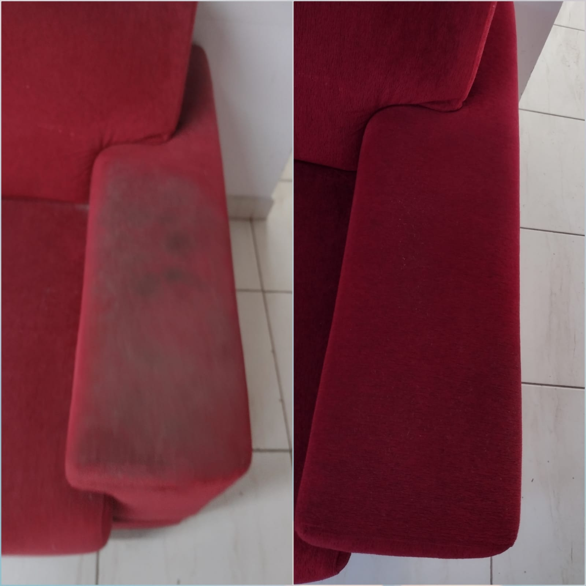
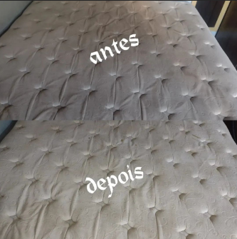
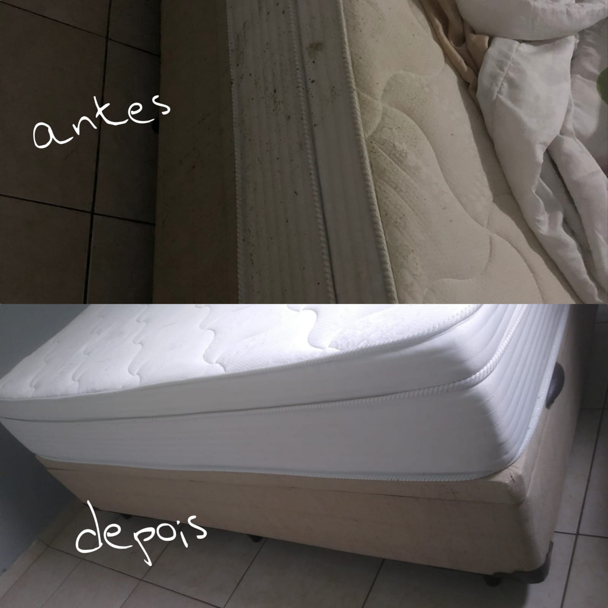
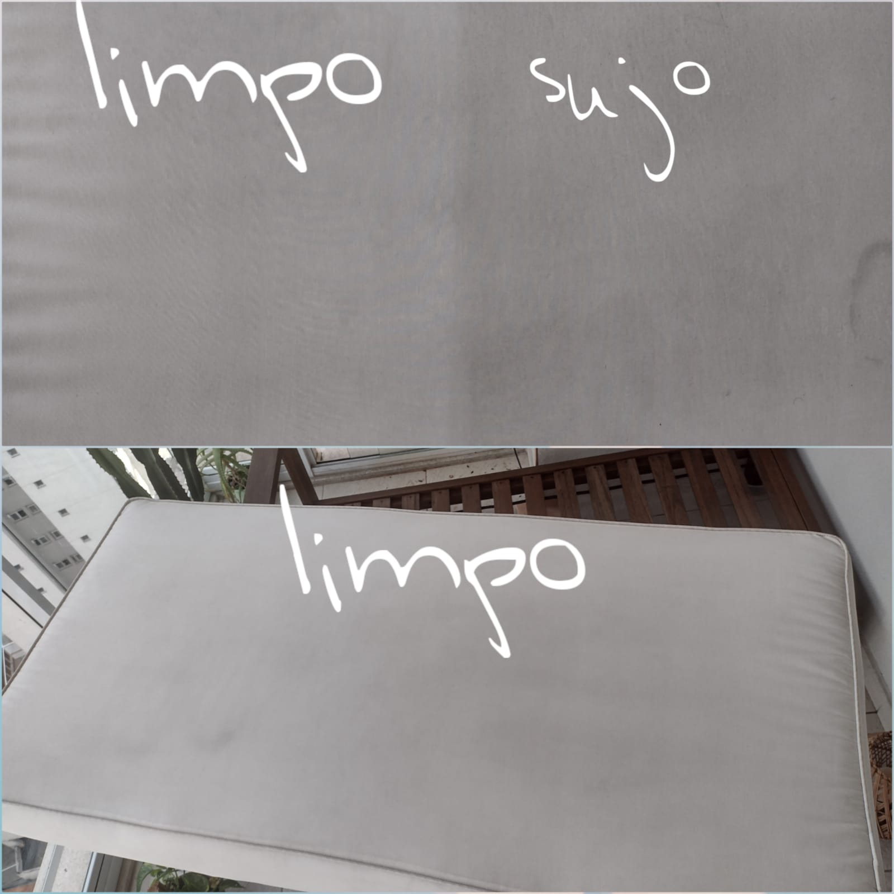
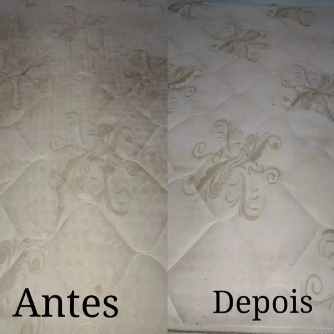

Serviços Em Sofás
-
Higienização e Limpeza
Sabemos que sofás são um dos móveis mais usados em uma casa ou empresa, e eles podem acumular sujeira, poeira, bactérias e odores desagradáveis com o tempo. É por isso que oferecemos serviços de higienização e limpeza completos que ajudam a manter os sofás limpos, saudáveis e com aparência de novo.
Nosso processo de higienização e limpeza de sofás é cuidadosamente desenvolvido para garantir a remoção de sujeira, poeira, manchas e bactérias, mantendo a aparência e a durabilidade do sofá. O processo inclui: Aspiração, Pré-tratamento(Aplicamos um pré-tratamento seguro e eficaz nas manchas e áreas sujas do sofá para soltar a sujeira e manchas antes da limpeza), Limpeza a vapor, Extração de água e por fim, aplicamos um produto de proteção de tecidos para proteger o sofá contra futuras manchas e sujeira, mantendo-o limpo e com aparência de novo por mais tempo.
Serviços em Colchões
-
Higienização e Limpeza
Os colchões são um dos lugares mais comuns para a proliferação de ácaros, bactérias e outros microrganismos prejudiciais à saúde. Com o tempo, o acúmulo de sujeira, poeira, suor e células mortas da pele pode causar odores desagradáveis, manchas e afetar a qualidade do sono. É por isso que oferecemos serviços de higienização e limpeza de colchões completos e eficazes.
Nosso processo de higienização e limpeza de colchões é cuidadosamente desenvolvido para garantir a remoção completa de sujeira, poeira, manchas e microrganismos prejudiciais, mantendo a aparência e a durabilidade do colchão. O processo inclui: Aspiração, pré-tratamento(Aplicamos um pré-tratamento seguro e eficaz nas manchas e áreas sujas do colchão para soltar a sujeira e manchas antes da limpeza.), limpeza a vapor, extração de água e por fim, aplicamos um produto de proteção para colchões para proteger o colchão contra futuras manchas e sujeira, mantendo-o limpo e com aparência de novo por mais tempo.